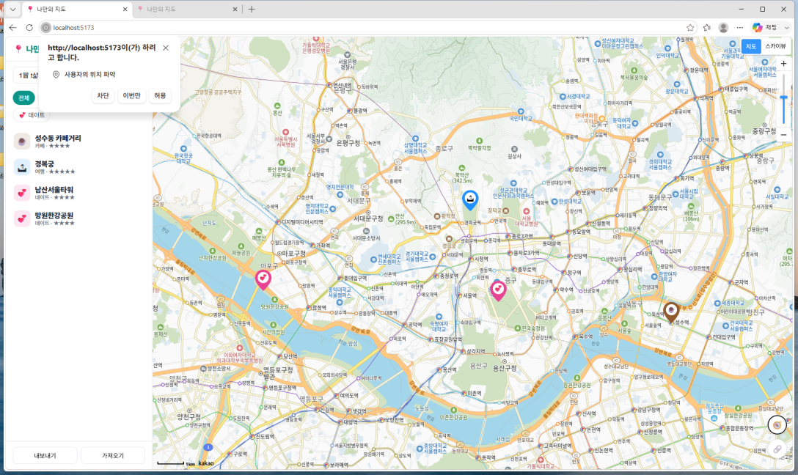
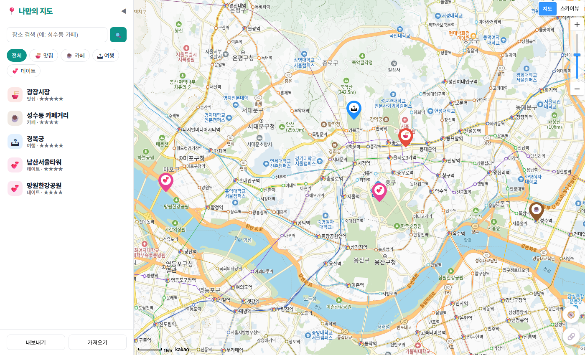
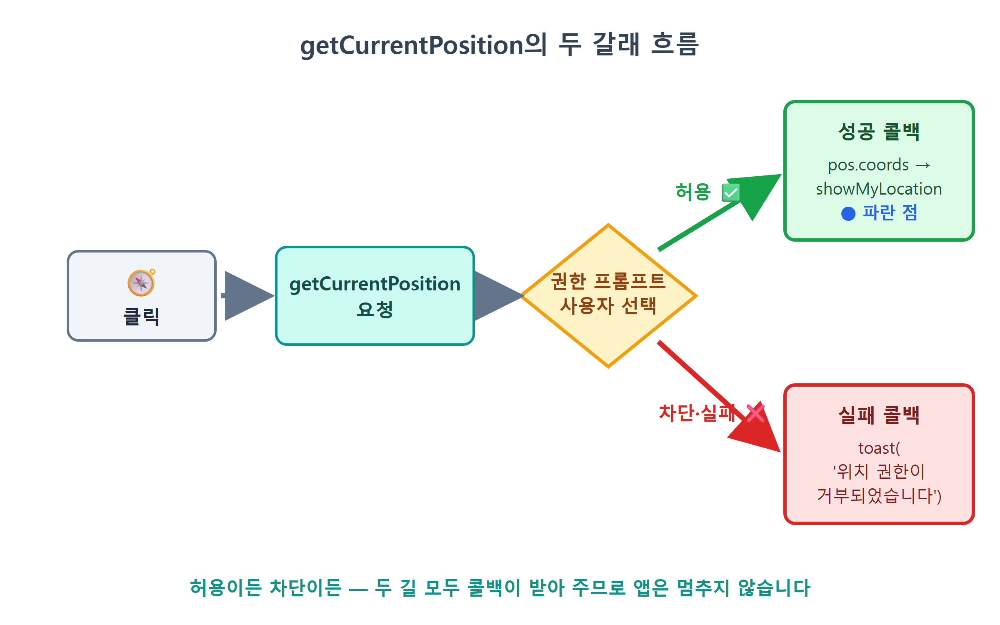
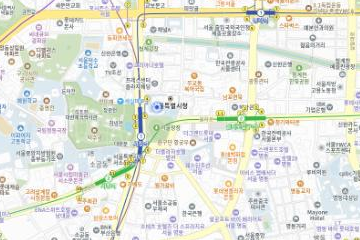
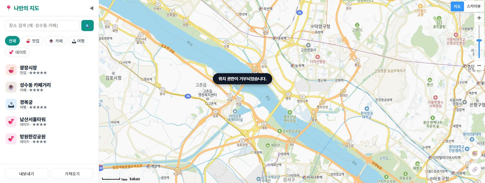
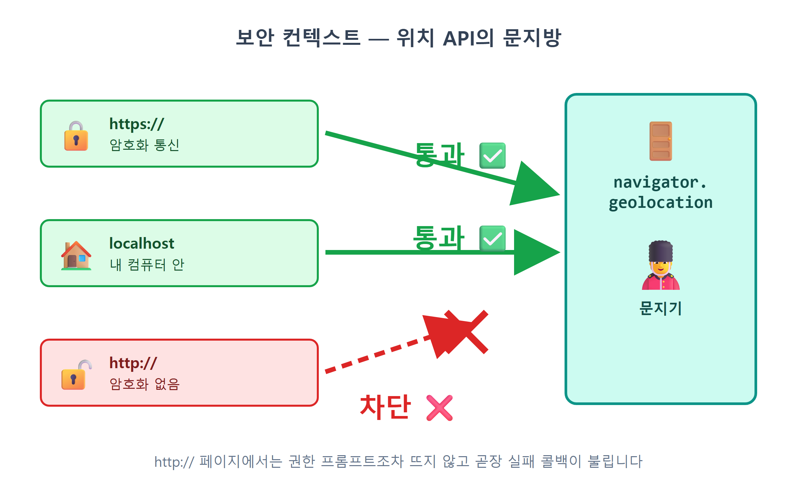

20장 내 위치 표시¶
이 장에서 배우는 것
- 브라우저에 내장된 Geolocation API로 사용자의 현재 위치를 알아냅니다
- 위치 권한 프롬프트가 왜 뜨는지, 언제 요청해야 좋은지(권한 UX)를 배웁니다
getCurrentPosition의 성공 콜백 / 실패 콜백 두 갈래 흐름을 처리합니다- CSS만으로 만든 파란 점 오버레이를 지도 위에 띄웁니다
- 위치 기능이 https 또는 localhost에서만 동작하는 이유를 이해합니다
3부까지 달려온 우리 지도 앱은 이제 어엿한 CRUD 앱입니다. 장소를 추가하고, 저장하고, 목록에서 고르고, 별점과 메모까지 남길 수 있습니다. 4부에서는 여기에 "있으면 확 편해지는" 기능들을 하나씩 얹어 갑니다. 그 첫 번째가 내 위치 표시입니다.
이런 상황을 상상해 보세요. 여러분이 성수동 골목을 걷다가 문득 "내가 저장해 둔 카페가 이 근처 어디였더라?" 하고 앱을 엽니다. 그런데 지도는 서울시청을 중심으로 떠 있습니다. 지금 내가 어디 있는지부터 지도에서 손으로 찾아야 한다면, 그 지도는 절반만 완성된 것입니다. 카카오맵이든 구글맵이든 모든 지도 앱의 오른쪽 아래에는 나침반 모양 버튼이 있고, 누르면 지도가 내가 서 있는 곳으로 날아가 파란 점을 찍어 줍니다. 이번 장에서 우리 앱에도 똑같은 버튼을 답니다.
재미있는 사실 하나. 이 기능을 만드는 데 카카오 SDK의 도움은 거의 필요 없습니다. 사용자의 위치를 알아내는 능력은 브라우저 자체에 내장되어 있기 때문입니다. 카카오는 그렇게 얻은 좌표에 지도를 이동시키고 점을 찍는 마무리만 담당합니다. 즉 이번 장의 주인공은 카카오가 아니라 웹 표준 API인 Geolocation API입니다.
20.1 Geolocation API — 브라우저는 내 위치를 어떻게 알까¶
Geolocation은 "지리적(geo) 위치(location)"라는 뜻 그대로, 브라우저에게 "지금 이 기기가 지구 어디에 있어?"라고 물어보는 표준 API입니다. 크롬, 엣지, 사파리, 파이어폭스 등 여러분이 쓸 만한 브라우저에는 전부 들어 있고, 자바스크립트에서는 navigator.geolocation이라는 객체로 만납니다.
그런데 브라우저는 GPS 위성과 직접 교신하는 것도 아닌데, 내 위치를 어떻게 아는 걸까요? 사실 브라우저는 운영체제에게 물어보고, 운영체제는 손에 잡히는 단서를 총동원합니다. 대표적인 단서가 세 가지입니다.
- GPS — 스마트폰이라면 GPS 칩이 위성 신호로 위치를 계산합니다. 오차 수 미터 수준으로 가장 정확하지만, 실내에서는 신호가 약해집니다.
- 와이파이 — 주변에 잡히는 와이파이 공유기 목록을 위치 데이터베이스와 대조합니다. "이 조합의 공유기들이 보이면 여기는 강남역 근처"라는 식이죠. 도시에서는 꽤 정확합니다.
- IP 주소 — 마지막 수단입니다. 인터넷 회선의 IP로 대략의 지역을 추정하는데, 시 단위까지만 맞고 동네는 틀리기 일쑤입니다.
그래서 같은 코드라도 어떤 기기에서 실행하느냐에 따라 정확도가 다릅니다. GPS가 달린 스마트폰에서는 파란 점이 내가 선 골목까지 맞히지만, 유선 랜에 연결된 데스크톱 PC에서는 옆 동네를 가리킬 수도 있습니다. 이건 우리 코드의 버그가 아니라 단서의 한계입니다. 이따가 실행 확인을 할 때 "어, 좀 빗나가네?" 싶어도 놀라지 마세요.
중요한 점이 하나 더 있습니다. 우리 자바스크립트 코드는 이 계산 과정에 전혀 관여하지 않습니다. 우리는 그저 "위치 주세요"라고 요청하고, 브라우저가 알아서 최선의 답을 구해 좌표로 돌려줍니다. 복잡한 일은 플랫폼에 맡기고 우리는 결과만 받아 쓰는 것, 바이브코딩과도 닮은 분업입니다.
💡 팁
개발자도구 콘솔에 navigator.geolocation을 입력해 보세요. Geolocation {} 객체가 나오면 여러분의 브라우저가 위치 기능을 지원한다는 뜻입니다. 요즘 브라우저에서 undefined가 나오는 일은 거의 없지만, "쓰기 전에 있는지 확인한다"는 습관은 코드에도 그대로 들어갑니다. 잠시 뒤에 보게 됩니다.
20.2 권한 프롬프트 — 물어보고 쓰는 문화¶
위치는 편리한 만큼 민감한 정보입니다. 내가 어디 있는지는 곧 내가 어디 사는지, 어디서 일하는지, 어디를 다니는지로 이어지니까요. 그래서 브라우저는 아무 웹사이트나 위치를 가져가도록 두지 않습니다. 웹사이트가 처음으로 위치를 요청하는 순간, 브라우저는 코드 실행을 잠시 멈추고 사용자에게 직접 물어봅니다.

이 대화 상자가 권한 프롬프트입니다. 여기서 사용자가 고를 수 있는 답은 크게 세 가지이고, 각각 결과가 다릅니다.
| 사용자의 선택 | 무슨 일이 일어나나 |
|---|---|
| 허용 | 브라우저가 위치를 계산해 성공 콜백으로 좌표를 넘겨줍니다. 이 사이트에 대한 허용이 기억됩니다. |
| 차단 | 실패 콜백이 호출됩니다. 차단도 기억되어, 다음부터는 프롬프트조차 뜨지 않고 곧장 실패합니다. |
| 무시(닫기) | 이번 요청만 실패하고, 다음에 다시 물어봅니다. |
개발자 입장에서 꼭 새겨야 할 교훈이 두 가지입니다.
첫째, 거부는 오류가 아니라 정상적인 선택지입니다. 사용자는 얼마든지 "싫어요"라고 답할 권리가 있고, 우리 앱은 그 경우에도 망가지지 않아야 합니다. 허용만 가정하고 만든 앱은 절반짜리입니다. 그래서 Geolocation API는 처음부터 성공과 실패, 두 갈래 길을 모두 준비하라고 설계되어 있습니다.
둘째, 권한은 필요한 순간에 요청해야 합니다. 접속하자마자 다짜고짜 위치 권한을 요구하는 사이트, 다들 한 번쯤 겪어 보셨죠? "얘가 왜 내 위치를 원하지?" 싶어 반사적으로 차단을 누르게 됩니다. 반면 사용자가 스스로 🧭 버튼을 누른 직후에 뜨는 프롬프트는 다릅니다. "내 위치를 보여 달라"고 방금 내가 요청했으니, 위치 권한을 묻는 이유가 자명합니다. 이것이 권한 UX의 제1원칙, "사용자의 행동에 대한 응답으로 요청하라"입니다. 우리 앱이 페이지 로드 시점이 아니라 버튼 클릭 시점에 위치를 요청하는 것은 우연이 아니라 설계입니다.
⚠️ 주의
테스트하다가 실수로 차단을 눌렀다면, 새로고침해도 프롬프트는 다시 뜨지 않습니다. 차단이 기억되었기 때문입니다. 크롬 주소창 왼쪽의 자물쇠(사이트 정보) 아이콘 → 사이트 설정 → 위치를 "허용" 또는 "묻기"로 되돌린 뒤 새로고침하세요. 앱을 만들 때 자주 겪는 일이니 되돌리는 길을 기억해 두면 좋습니다.
20.3 버튼 달고 위치 요청하기¶
개념 준비는 끝났습니다. 이제 Claude Code에게 시켜 봅시다. 만들 것은 세 가지입니다. 지도 위에 떠 있는 🧭 버튼, 버튼을 눌렀을 때 위치를 요청하는 코드, 그리고 받은 좌표에 파란 점을 찍고 지도를 이동시키는 함수입니다.
🗣 이렇게 시키세요
지도 오른쪽 아래에 🧭 내 위치 버튼을 추가해줘. 누르면 Geolocation API로 현재 위치를 얻어서, 지도를 그 자리로 이동하고 카카오맵처럼 파란 점을 표시해줘. 파란 점은 CustomOverlay + CSS로 만들고, 권한이 거부되면 토스트로 알려줘. 위치 요청은 반드시 버튼을 눌렀을 때만 해야 해.
프롬프트에 지금까지 배운 개념이 녹아 있는 게 보이시나요? "버튼을 눌렀을 때만"은 20.2의 권한 UX 원칙이고, "거부되면 토스트로"는 실패 콜백 처리이고, "CustomOverlay + CSS"는 13장에서 배운 말풍선 기법의 재활용입니다. 개념을 알고 시키면 프롬프트가 정확해지고, 결과물도 원하는 모양으로 나옵니다.
Claude Code는 먼저 index.html의 지도 영역에 버튼을 추가합니다.
<main id="map-wrap">
<div id="map"></div>
<button id="btn-mylocation" title="내 위치">🧭</button>
</main>
그리고 style.css에서 이 버튼을 지도 위에 띄웁니다.
#btn-mylocation {
position: absolute; right: 12px; bottom: 76px; z-index: 15;
border: 1px solid var(--line); background: #fff; border-radius: 50%;
width: 42px; height: 42px; cursor: pointer; font-size: 18px;
box-shadow: 0 2px 6px rgb(0 0 0 / 0.15);
}
#map-wrap이 position: relative이므로, 그 안에서 position: absolute를 쓰면 버튼이 지도 위에 겹쳐 뜹니다. border-radius: 50%로 동그란 버튼을 만들고 z-index: 15로 지도 타일보다 위에 올렸습니다. 카카오맵 앱의 그 버튼과 같은 자리, 같은 모양입니다.

이제 핵심인 src/main.js의 클릭 리스너입니다. 짧지만 이 장의 개념이 전부 들어 있습니다.
// 내 위치
document.getElementById('btn-mylocation').addEventListener('click', () => {
if (!navigator.geolocation) {
toast('이 브라우저는 위치를 지원하지 않습니다.');
return;
}
navigator.geolocation.getCurrentPosition(
(pos) => showMyLocation(pos.coords.latitude, pos.coords.longitude),
() => toast('위치 권한이 거부되었습니다.')
);
});
위에서부터 한 줄씩 읽어 봅시다.
지원 확인부터. if (!navigator.geolocation) — 위치 기능이 아예 없는 브라우저라면 정중히 안내하고 물러납니다. 20.1에서 말한 "쓰기 전에 있는지 확인" 습관이 바로 이 줄입니다. 요즘 브라우저에서 걸릴 일은 드물지만, 이 세 줄 덕분에 우리 앱은 어떤 환경에서도 에러 없이 우아하게 동작합니다.
요청은 한 줄. getCurrentPosition은 이름 그대로 "현재 위치를 얻어라"입니다. 그런데 반환값을 변수에 받지 않는 점이 눈에 띕니다. const pos = navigator.geolocation.getCurrentPosition(...)이 아니에요. 왜일까요? 위치 계산은 시간이 걸리는 일이기 때문입니다. 권한 프롬프트에서 사용자가 고민하는 시간, GPS가 위성을 잡는 시간이 얼마나 걸릴지 아무도 모릅니다. 그동안 앱을 얼어붙게 둘 수는 없으니, 브라우저는 "끝나면 이 함수를 불러 줘"라는 콜백 방식을 씁니다. 15장의 keywordSearch가 콜백으로 검색 결과를 돌려주던 것과 정확히 같은 패턴입니다. 한 번 배운 패턴이 이렇게 계속 재등장합니다.
두 갈래 길. getCurrentPosition은 콜백을 두 개 받습니다. 첫 번째 인자는 성공 콜백 — 위치를 얻으면 pos 객체와 함께 호출됩니다. 두 번째 인자는 실패 콜백 — 사용자가 차단했거나, 위치를 계산할 수 없으면 호출됩니다. 성공하면 showMyLocation으로 파란 점을 찍고, 실패하면 toast로 "위치 권한이 거부되었습니다"라고 알립니다. 실패했을 때 아무 반응이 없는 것과, 짧게라도 이유를 알려 주는 것. 사용자가 느끼는 완성도 차이는 생각보다 큽니다.
좌표 꺼내기. 성공 콜백이 받는 pos는 GeolocationPosition 객체입니다. 알맹이는 pos.coords 안에 있는데, latitude(위도)와 longitude(경도)가 우리가 쓸 값입니다. 9장에서 배운 위경도 그대로죠. coords 안에는 accuracy(오차 반경, 미터)도 들어 있어서, 지금 받은 좌표가 어느 정도 믿을 만한지도 알 수 있습니다.

20.4 파란 점 오버레이 — CSS 세 줄의 마법¶
이제 받은 좌표를 화면에 그릴 차례입니다. Claude Code가 src/mapView.js에 추가한 showMyLocation 함수를 봅시다.
let myLocationMarker = null;
export function showMyLocation(lat, lng) {
const pos = new kakao.maps.LatLng(lat, lng);
if (!myLocationMarker) {
const el = document.createElement('div');
el.className = 'my-location-dot';
myLocationMarker = new kakao.maps.CustomOverlay({ content: el, position: pos, zIndex: 5 });
}
myLocationMarker.setPosition(pos);
myLocationMarker.setMap(map);
map.setLevel(4);
map.panTo(pos);
}
파란 점의 정체는 마커가 아니라 13장에서 배운 CustomOverlay입니다. 내용물(content)로 my-location-dot 클래스를 단 빈 div 하나를 넣었을 뿐입니다. 이미지 파일이 아니라 CSS로 그린 점이죠. style.css의 해당 부분은 이렇습니다.
.my-location-dot {
width: 16px; height: 16px; border-radius: 50%;
background: #2563eb; border: 3px solid #fff;
box-shadow: 0 0 0 6px rgb(37 99 235 / 0.25);
}
읽어 보면 카카오맵의 그 파란 점이 그대로 보입니다. 16px 정사각형을 border-radius: 50%로 동그랗게 말고, 파란색(#2563eb)으로 칠하고, 흰 테두리 3px를 둘렀습니다. 마지막 줄이 백미인데, box-shadow의 번짐(blur)을 0으로 두고 퍼짐(spread)만 6px 주면 그림자가 아니라 반투명 파란 링이 됩니다. GPS 오차 범위를 표현하는 듯한 그 은은한 후광이 CSS 한 줄로 완성됩니다.
자바스크립트 쪽에서 눈여겨볼 것은 let myLocationMarker = null과 if (!myLocationMarker) 조합입니다. 파란 점 오버레이는 처음 한 번만 만들고, 그다음부터는 재사용합니다. 버튼을 열 번 누르면 점이 열 개 생기는 게 아니라, 하나뿐인 점이 setPosition(pos)으로 새 위치로 이동합니다. 내 위치는 언제나 한 곳뿐이니 점도 하나여야 한다 — 데이터의 성질이 코드 구조를 결정한 셈입니다. 13장에서 "열린 말풍선은 하나만"이라며 openOverlay 변수 하나로 관리했던 것과 같은 발상입니다.
마지막 두 줄 setLevel(4)와 panTo(pos)는 10장 복습입니다. 지도를 동네가 보이는 축척으로 당기고, 내 위치까지 부드럽게 미끄러져 갑니다. focusPlace에서 장소로 이동할 때 쓴 바로 그 조합입니다.
이제 실행해 봅시다. npm run dev가 켜진 상태에서 브라우저를 새로고침하고 🧭 버튼을 누르세요. 권한 프롬프트가 뜨면 허용을 누릅니다. 잠시 후 지도가 스르륵 움직이더니, 여러분이 있는 곳에 흰 테두리의 파란 점이 나타납니다.

이번에는 실패 쪽 길도 확인합니다. 주소창의 사이트 설정에서 위치를 차단으로 바꾸고 버튼을 다시 눌러 보세요. 앱이 조용히 있는 대신, 화면 아래에 토스트가 떠서 "위치 권한이 거부되었습니다"라고 알려 주면 성공입니다. 두 갈래 길이 모두 잘 닦였습니다. 확인이 끝나면 설정을 다시 "묻기"로 되돌려 두세요.

💡 팁
데스크톱 PC에서 파란 점이 실제 위치와 몇 블록 어긋나도 정상입니다(20.1의 단서 이야기를 떠올리세요). 정확한 좌표로 테스트하고 싶다면 개발자도구의 센서(Sensors) 패널을 이용하세요. ++f12++ → 오른쪽 위 ⋮ 메뉴 → 도구 더보기 → 센서에서 위치를 "Tokyo"나 직접 입력한 위경도로 가짜 지정(오버라이드)할 수 있습니다. 여행 앱 개발자들이 서울에 앉아 파리 테스트를 하는 방법입니다.
20.5 https와 localhost — 보안 컨텍스트라는 문지방¶
마지막으로, 언젠가 여러분을 반드시 한 번 놀라게 할 함정을 미리 밟아 둡시다. Geolocation API는 아무 페이지에서나 동작하지 않습니다. 브라우저는 이 API를 보안 컨텍스트(secure context), 쉽게 말해 "안전하다고 믿을 수 있는 페이지"에서만 열어 줍니다. 기준은 주소입니다.
https://로 시작하는 페이지 — ✅ 동작http://localhost(우리의localhost:5173포함) — ✅ 동작 (개발용 특례)- 그 밖의
http://페이지 — ❌ 차단. 권한 프롬프트조차 뜨지 않고 곧장 실패 콜백이 불립니다.
이유는 http의 성질에 있습니다. http://로 주고받는 데이터는 암호화되지 않은 채 인터넷을 여행합니다. 같은 와이파이에 있는 누군가가 마음만 먹으면 오가는 내용을 엿볼 수 있다는 뜻입니다. 내 위치처럼 민감한 정보가 그런 맨몸 통신으로 흘러 다니게 둘 수는 없으니, 브라우저가 문 앞에서 막아 버리는 것입니다. https://는 통신 전체를 암호화하므로 통과이고, localhost는 내 컴퓨터 안에서만 도는 통신이라 엿볼 구간 자체가 없으니 개발 편의를 위해 특례로 통과입니다.

지금 우리는 localhost:5173에서 개발 중이니 아무 문제가 없습니다. 함정은 배포할 때 나타납니다. 25장에서 GitHub Pages로 배포하면 주소가 https://아이디.github.io/...가 되므로 다행히 통과입니다. 하지만 언젠가 여러분이 다른 방법으로 앱을 올렸는데 주소가 http://라면, 개발 내내 멀쩡하던 내 위치 버튼이 갑자기 침묵할 겁니다. 코드는 그대로인데 주소가 달라져서 생기는 문제 — 이 장을 기억한다면 "아, 보안 컨텍스트!" 하고 5초 만에 원인을 짚을 수 있습니다.
⚠️ 주의
같은 이유로, 개발 서버에 다른 기기로 접속하면(예: 스마트폰에서 http://192.168.0.x:5173) localhost가 아니므로 위치 기능이 동작하지 않습니다. localhost 특례는 말 그대로 localhost라는 주소에만 적용됩니다. 스마트폰 GPS로 테스트해 보고 싶다면 25장에서 https 주소로 배포한 뒤에 하는 것이 가장 간단합니다.
20.6 마무리¶
버튼 하나, 함수 하나, CSS 네 줄. 코드 분량은 이 책에서 손꼽게 적은 장이었지만, 그 뒤에 있는 개념은 결코 가볍지 않았습니다. 브라우저가 위치를 알아내는 방법, 사용자에게 물어보고 쓰는 권한 문화, 성공과 실패 두 갈래를 모두 준비하는 비동기 처리, 그리고 https라는 문지방까지. 앞으로 카메라, 마이크, 알림 같은 다른 브라우저 권한을 만나도 오늘 배운 틀이 그대로 통합니다. 요청은 사용자 행동에 대한 응답으로, 거부는 정상 선택지로, 민감한 API는 보안 컨텍스트에서만.
📌 핵심 요약
- Geolocation API(
navigator.geolocation)는 브라우저 내장 표준 API로, GPS·와이파이·IP를 단서로 위치를 계산합니다. 카카오 SDK와는 별개입니다. - 위치 요청 시 브라우저가 권한 프롬프트를 띄우며, 거부는 오류가 아니라 정상적인 선택지입니다. 권한은 페이지 로드 시가 아니라 사용자가 버튼을 누른 순간 요청합니다.
getCurrentPosition(성공콜백, 실패콜백)— 성공 시pos.coords.latitude / longitude로 좌표를 얻고, 실패 시 토스트로 안내합니다.- 파란 점은
CustomOverlay+ CSS(border-radius: 50%, 흰border, 퍼짐만 준box-shadow링)로 만들며, 오버레이는 하나만 만들어setPosition으로 재사용합니다. - Geolocation은 https 또는 localhost(보안 컨텍스트)에서만 동작합니다. http 배포 주소에서는 프롬프트 없이 곧장 실패합니다.
🤔 생각해보기
Q1. 접속하자마자 위치 권한을 요구하는 사이트와 버튼을 눌렀을 때 요구하는 사이트, 사용자로서 느낌이 어떻게 달랐나요? 우리 앱의 다른 기능에도 이 원칙을 적용할 곳이 있을까요?
✍️ ________
✍️ ________
Q2. 파란 점을 Marker 대신 CustomOverlay로 만든 이유는 무엇일까요? 13장의 말풍선을 떠올리며 두 방식의 차이를 설명해 보세요.
✍️ ________
✍️ ________
✏️ 연습 문제
- 성공 콜백에서
pos.coords.accuracy를 콘솔에 출력하도록 Claude Code에게 시켜 보세요. 여러분의 환경에서 오차 반경은 몇 미터로 나오나요? 스마트폰과 PC의 값을 비교해 보세요. - 실패 콜백은 사실
err객체를 인자로 받습니다.err.code가 1(권한 거부), 2(위치 계산 불가), 3(시간 초과)일 때 각각 다른 토스트 메시지를 보여 주도록 개선해 보세요. .my-location-dot의box-shadow퍼짐 값을 6px에서 12px로, 색의 투명도를 바꿔 가며 링의 느낌이 어떻게 달라지는지 실험해 보세요.- 개발자도구 센서 패널에서 위치를 "Berlin"으로 오버라이드한 뒤 🧭 버튼을 눌러, 파란 점이 베를린에 찍히는지 확인해 보세요.
🔎 더 찾아보기
watchPosition— 한 번이 아니라 이동할 때마다 계속 위치를 받아오는 메서드. 내비게이션처럼 파란 점이 나를 따라다니게 하려면 이것을 씁니다 (해제는clearWatch).enableHighAccuracy—getCurrentPosition의 세 번째 인자(옵션)로 넘기는 정확도 우선 모드. 배터리를 더 쓰는 대신 GPS를 적극 활용합니다.Permissions API—navigator.permissions.query로 권한 상태(granted/denied/prompt)를 묻기 전에 미리 확인하는 표준 API.Geolocation heading/speed—pos.coords에 함께 들어 있는 진행 방향·속도 값. 이동 중인 기기에서만 채워집니다.
다음 장 예고 — 내 지도가 근사해질수록 누군가에게 보여 주고 싶어집니다. 21장에서는 지금 보고 있는 지도의 위치와 확대 레벨을 URL 하나에 담아 공유하는 기능을 만듭니다. 링크를 받은 친구가 열면 내가 보던 바로 그 화면이 열립니다. 주소창의
#뒤에 상태를 싣는 URL 해시 기법, 그리고 클립보드 API가 등장합니다.